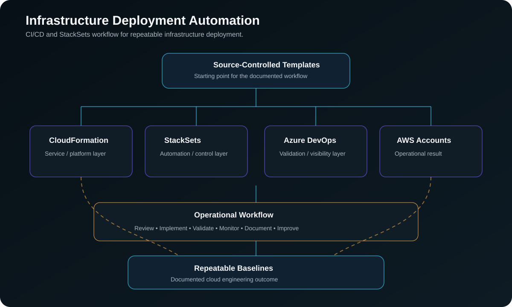

Project Documentation
Infrastructure Deployment Automation
This case study documents how I supported repeatable infrastructure deployment patterns using CloudFormation, StackSets, pipeline workflows, and account-level baseline automation.
Overview
The project focused on making infrastructure deployments more consistent across accounts and environments.
Problem
Manual infrastructure changes can create configuration drift, inconsistent security settings, and slow deployment cycles.
Architecture
The architecture used source-controlled templates, deployment workflows, IAM access patterns, and target AWS accounts where infrastructure baselines could be applied consistently.

What I Did
I worked with CloudFormation templates, StackSet-style deployment patterns, pipeline support, AWS CLI validation, and operational review of deployed resources.
Implementation Approach
1. Reviewed the current state
I reviewed the existing process, access model, services, operational gaps, and areas where manual work created risk or inconsistency.
2. Mapped the technical workflow
I documented how requests, services, automation, monitoring, and operational follow-up moved through the environment.
3. Implemented or supported the changes
I worked with the relevant AWS services, scripts, IAM controls, monitoring tools, and deployment workflows needed to support the project.
4. Validated the result
I reviewed service behavior, logs, configuration state, security findings, access behavior, and operational output to confirm the work was successful.
5. Documented the outcome
I captured the architecture, implementation flow, operational value, and follow-up considerations so the work could be reviewed and reused.
Outcome
The work helped improve deployment consistency, reduce manual configuration drift, and make cloud infrastructure changes easier to review, repeat, and support.